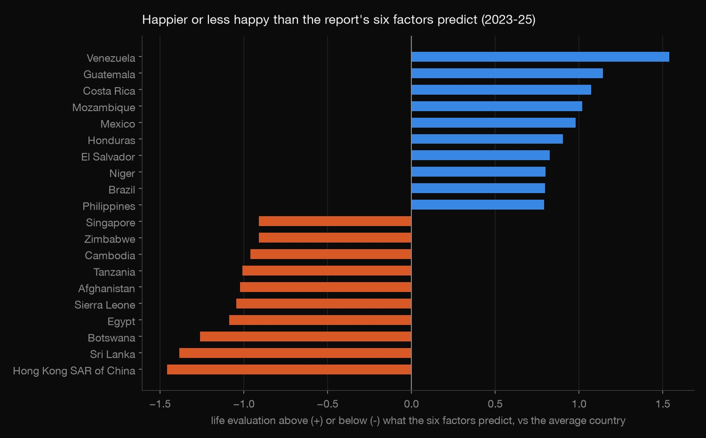
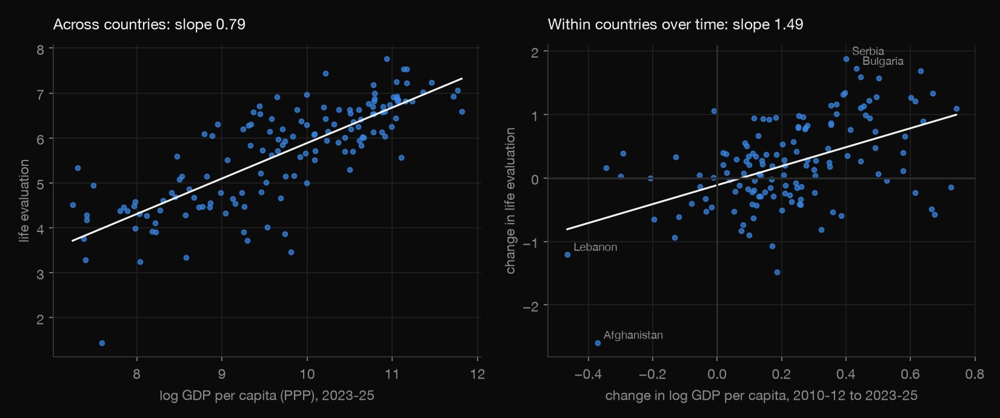
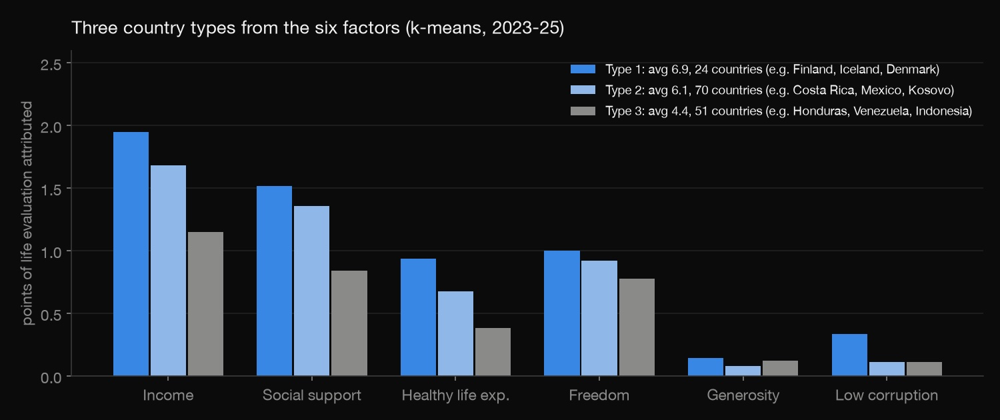
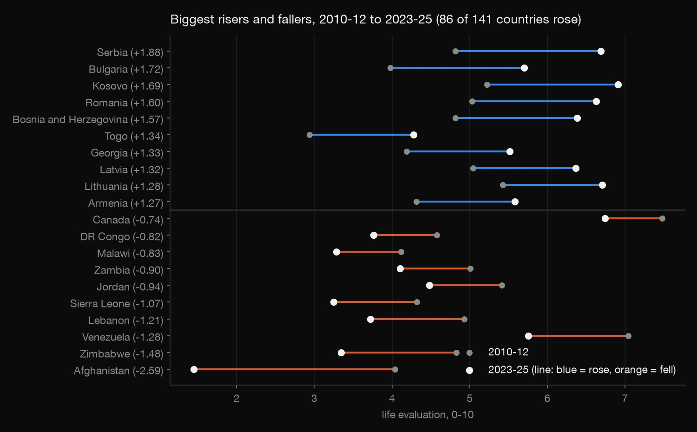

Social science · Statistics · 2026-10
World Happiness
What goes with a happier country, who is happier than their circumstances predict, and does economic growth make a country happier? The 2026 World Happiness Report, tested against open World Bank data.

Country averages from survey data: they describe countries, not individuals, and the relationships here are associations, not proof of cause.
01 — The problem
Every year the World Happiness Report ranks countries by how people rate their lives from 0 to 10. Behind the ranking are social-science questions: has the world got happier, which countries are happier than their circumstances suggest, and does getting richer actually make a country happier? That last one is the Easterlin paradox, debated since 1974.
02 — What I built
An analysis of the official 2026 report data (life evaluations for 168 countries, 2011–2025, and the report's split into six factors), joined with open World Bank data on income, life expectancy and unemployment:
- Change from 2010–12 to 2023–25.
- Happier than predicted: what the report's six factors leave unexplained.
- Country types from k-means clustering.
- An independent model using only open data.
- An Easterlin test: across countries vs within countries over time, with robustness checks.
03 — How it was built
- 01
Use what's openly published, and say what isn't
The report's year-by-year panel sits behind its data portal's API, which requires a special token. So this uses only the officially published file for Figure 2.1, plus the World Bank's open API. Matching country names between the two needed 19 hand mappings: "Türkiye" vs "Turkiye", "State of Palestine" vs "West Bank and Gaza", and so on. Three places (North Cyprus, Somaliland, Taiwan) aren't in World Bank data.
- 02
Compare like with like
The report's scores are 3-year averages, so neighbouring years share data. The analysis uses five windows that don't overlap: 2010–12, 2014–16, 2017–19, 2020–22 and 2023–25. World Bank figures are averaged over the same windows. There's no 2013 window because there was no 2014 report.
- 03
Avoid a circular model
The report already explains each score with six factors, so regressing scores on those pieces would just give back the report's own model. Instead, the leftover part of each score shows who is happier than predicted: Latin America by +0.59 on average. A separate model uses only open data: income alone explains 63% of the differences between countries, and life expectancy and unemployment take it to 67%.

- 04
Test the Easterlin paradox
Across countries, richer means happier. The paradox claims that within a country, growth over time doesn't raise happiness. Here, a country's change in income from 2010–12 to 2023–25 is compared with its change in life evaluation, then checked three ways: with country fixed effects over all five windows, using only countries that grew, and without the five economic collapses.

- 05
Group countries, honestly
k-means on the six factor contributions finds three types. Type 1 is Nordic-style (24 countries, average 6.9). Type 2 is middle-income with strong social support (70 countries, 6.1). Type 3 is low on almost everything (51 countries, 4.4). The silhouette score is only 0.28, so these are a useful summary rather than sharply separated groups.
check.pyconfirms the report's pieces add up to each score and that every slope recomputes.
04 — Results

- Most countries got happier: 86 of 141 rose. Eastern Europe led (Serbia +1.88, Bulgaria +1.72); Afghanistan fell 2.59 points.
- Latin America is happier than its circumstances predict (+0.59 on average); South Asia less so (−0.50).
- No Easterlin paradox in this period: within countries, income growth went with rising life satisfaction (slope 1.49, 95% CI 0.92–2.07), at least as strongly as across countries (0.79). It holds with fixed effects (1.40), growing countries only (1.48) and without collapses (1.26).
- But it's an association: much of it is Eastern Europe, where growth and wellbeing rose together for reasons (EU integration, recovery) that could drive both.
05 — What I'd do next
- Use the full individual-level Gallup data (licensed) to separate country effects from who lives there.
- Longer horizons: the paradox is about decades, and 13 years is short.
- Add inequality and institutions (Gini, rule of law) to the open-data model.